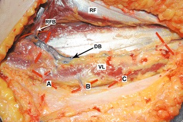
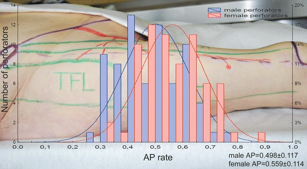

太もも（大腿）の皮膚を、血流を保ったまま体の別の場所へ移す「大腿皮弁（だいたいひべん）」を報告した論文です。太ももは分層植皮（ぶんそうしょくひ＝皮膚の表層だけを薄く採って移植する方法）の採皮部として最もよく使われる場所でしたが、著者らは中隔皮動脈（ちゅうかくひどうみゃく＝septocutaneous artery、筋と筋のあいだの隔壁を通って皮膚に達する動脈）という血管に着目し、ここを皮弁のドナー（提供部位）としても使えることを示しました。現在マイクロサージャリー（顕微鏡下の血管吻合手術）で最も広く使われる皮弁のひとつ、前外側大腿皮弁（ALT皮弁）の出発点となった報告とされます。
背景 ― 「採皮部」でしかなかった太もも
太もも（大腿）の皮膚は広く、目立ちにくく、採取しても機能の障害が少ないため、古くから分層植皮の採皮部として最もよく使われてきました。しかし植皮（皮膚だけを移植する方法）は、それ自体には血流がなく、移植先の血流に頼って生着します。そのため腱や骨、人工物が露出した「血流の乏しい面」は植皮では覆えず、血流を持った皮膚の塊＝皮弁（ひべん）で覆う必要があるとされます。
1980年代初頭、皮弁のドナーとして使えたのは下腹部皮弁や鼠径（そけい）皮弁、あるいは筋肉ごと皮膚を移す筋皮弁（きんぴべん＝大腿筋膜張筋・縫工筋・薄筋などを用いる）が中心でした。筋皮弁は筋肉を犠牲にするため、採取部の機能が損なわれたり、皮弁が厚くなりすぎたりする難点があります。「筋肉を取らずに、皮膚だけを血管付きで運べないか」という発想が求められていた時期にあたります。
その鍵となったのが中隔皮動脈（septocutaneous artery）の概念です。これは筋肉を貫くのではなく、筋と筋のあいだの隙間（筋間中隔＝きんかんちゅうかく）を通って皮膚へ達する動脈で、これを追いかければ筋肉を切らずに皮膚を挙上できる、という考え方とされます。
この論文がしたこと
著者らは、中隔皮動脈による皮弁（septocutaneous artery flap）という概念に基づけば、分層植皮の採皮部として最もよく使われてきた太ももを、皮弁のドナーとしても使えると述べています。抄録では、この皮弁を「thigh flap（大腿皮弁）」と呼んでいます。
報告された大腿皮弁は、大きく長い神経血管柄（しんけいけっかんへい＝血管と神経を含む茎。皮弁への血流の通り道であり、知覚神経も一緒に運べることを意味します）を持つ点が特徴とされます。そしてこの皮弁は、遊離皮弁（血管ごと切り離し、顕微鏡下で移植先の血管に縫い直す皮弁）としても、島状皮弁（周囲の皮膚から切り離し、血管の茎だけでつながったまま移動させる皮弁）としても使えると記載されています。
抄録では、この大腿皮弁が、それまで使われてきた下腹部皮弁・鼠径皮弁・大腿筋膜張筋皮弁・縫工筋皮弁・薄筋皮弁の代替になりうると位置づけられています。そのうえで、解剖学的な裏づけ（anatomical basis）、手術手技（operative technique）、そしてこの皮弁の特徴（characteristics）が論じられた、と述べられています。
解剖と手技の要点
ここから先は、原著の抄録には具体的な記載がないため、その後の解剖学的研究で整理されてきた一般的な知見です。前外側大腿皮弁（ALT皮弁）の血流は、外側大腿回旋動脈（がいそくだいたいかいせんどうみゃく）の下行枝（かこうし）から出る穿通枝（せんつうし＝深部の血管から皮膚へ立ち上がる細い枝）に支えられるとされます。
穿通枝には2つのタイプがあります。ひとつは筋間中隔を通る中隔皮枝（原著が着目したタイプ）、もうひとつは外側広筋（がいそくこうきん）という筋肉の中を貫いてから皮膚に達する筋皮枝（きんぴし）です。実際には筋皮枝であることが多く、その場合は筋肉の中で枝を丁寧に剥離して追いかける操作が必要になるとされます。
穿通枝の位置は、上前腸骨棘（じょうぜんちょうこつきょく＝ASIS、骨盤の前の出っ張り）と膝蓋骨（しつがいこつ＝膝のお皿）を結んだ線を目安に探すのが一般的で、おおむねその中点付近に集まるとされます。ただし個人差があり、実際の手術では超音波ドプラなどで事前に位置を確認します。


結果
この論文の抄録には、症例数や生着率といった具体的な成績の記載はありません。抄録で示されているのは、大腿皮弁の解剖学的な裏づけ・手術手技・特徴が本文で論じられている、という点までです。したがって本ページでも、成績に関する数値は記載しません。
抄録から確認できる「特徴」は次の3点です。第一に、大きく長い神経血管柄を持つこと。第二に、遊離皮弁としても島状皮弁としても使えること。第三に、下腹部皮弁・鼠径皮弁・大腿筋膜張筋皮弁・縫工筋皮弁・薄筋皮弁といった既存の皮弁の代替になりうること。
なお、抄録の本文では一貫して「thigh flap（大腿皮弁）」と表現されており、「anterolateral（前外側）」という語は抄録には現れません。後年の総説では、著者らが大腿の前外側・前内側・後面という3つの領域に皮弁を設計し、そのうち前外側のものが今日のALT皮弁にあたると整理されています。
意義 ― なぜ「ワークホース」になったのか
この報告は、前外側大腿皮弁（ALT皮弁）の最初の記載として広く引用されており、現在では頭頸部・四肢の再建における主力（ワークホース＝働き者の馬、日常的に最もよく使う皮弁の意）とされています。
評価される理由は、抄録が挙げた特徴とよく対応しています。血管柄が長く太いことは、移植先で血管を縫いやすく、遠くまで届くことを意味します。神経を含められることは、移植した皮膚に知覚（触った感覚）を戻せる可能性につながります。さらに、筋肉を犠牲にせず皮膚だけを挙上できるため、採取した側の機能障害が少なく、面積の大きな皮膚を採れる点も利点とされます。
「最もありふれた採皮部」を「最も使える皮弁のドナー」へと読み替えたことが、この論文の本質的な貢献だと言えます。中隔皮動脈という血管の見方を提示したことは、のちに穿通枝皮弁（せんつうしひべん＝筋肉を取らず、皮膚へ立ち上がる穿通枝1本を追いかけて挙げる皮弁）という考え方が広がっていく流れの、重要な一歩と位置づけられています。
この論文の要点
- 中隔皮動脈（septocutaneous artery）にもとづく皮弁という概念を提示し、分層植皮の採皮部として最も一般的だった大腿を、皮弁のドナーとしても使えることを示した。
- この大腿皮弁は、大きく長い神経血管柄（血管に加えて神経も含む茎）を持つことが特徴とされる。
- 遊離皮弁としても、島状皮弁としても使用できると報告された。
- 下腹部皮弁・鼠径皮弁・大腿筋膜張筋皮弁・縫工筋皮弁・薄筋皮弁の代替となりうる選択肢として位置づけられた。
- 抄録には症例数・生着率などの成績の記載はなく、解剖学的裏づけ・手術手技・特徴が論じられたと述べられるにとどまる。
- 今日の前外側大腿皮弁（ALT皮弁）の原著とされ、頭頸部・四肢再建の主力皮弁の出発点となった。
用語ミニ辞典
- 前外側大腿皮弁（ALT皮弁）
- 太ももの前外側の皮膚を、外側大腿回旋動脈下行枝の穿通枝を血流源として挙げる皮弁。anterolateral thigh flap の略。頭頸部や四肢の再建で最もよく使われる皮弁のひとつ。
- 中隔皮動脈（septocutaneous artery）
- 筋肉の中を貫くのではなく、筋と筋のあいだの隔壁（筋間中隔）を通って皮膚へ達する動脈。筋肉を切らずに皮膚を挙上できる根拠となる血管で、この論文が着目した概念。
- 穿通枝（せんつうし）
- 深部の血管から筋膜などを貫いて皮膚へ立ち上がる枝。筋間中隔を通るものを中隔皮枝、筋肉の中を貫くものを筋皮枝と呼ぶ。
- 外側大腿回旋動脈 下行枝
- 太ももの外側を下向きに走る動脈。大腿直筋と外側広筋のあいだの溝を走り、ALT皮弁へ向かう穿通枝の多くがここから分かれるとされる。
- 遊離皮弁 / 島状皮弁
- 遊離皮弁は血管ごと切り離し、顕微鏡下で移植先の血管に縫い直す皮弁。島状皮弁は周囲の皮膚から切り離し、血管の茎だけでつながったまま移動させる皮弁。原著の大腿皮弁はどちらにも使えるとされた。
- 筋皮弁（きんぴべん）
- 筋肉と、その上の皮膚をひとかたまりにして移す皮弁。血流は安定するが筋肉を犠牲にする。大腿筋膜張筋皮弁・縫工筋皮弁・薄筋皮弁などがこれにあたる。
- 分層植皮（ぶんそうしょくひ）
- 皮膚の表層だけを薄く採取して移植する方法。それ自体に血流はなく、移植先の血流に頼って生着する。太ももはこの採皮部として最もよく使われる場所だった。
- 神経血管柄
- 皮弁への血流の通り道である血管の茎に、知覚神経を含めたもの。移植した皮膚に感覚を戻せる可能性につながる。
- 上前腸骨棘（ASIS）
- 骨盤の前方にある出っ張り。膝蓋骨（膝のお皿）と結んだ線が、ALT皮弁の穿通枝を探すときの目安になる。
本ページは形成外科の学習・参照を目的とした編集部によるオリジナルの日本語解説で、原著（英語）の逐語訳・全文転載ではありません。正確な内容・数値・図は必ず上記リンク先の原著をご確認ください。
掲載している図は、原著の図ではありません。原著の図は出版社が著作権を持ち転載できないため、同じ術式・同じ解剖を扱った無料公開（オープンアクセス／CC BY）論文の図を、出典とライセンスを明記して引用しています。